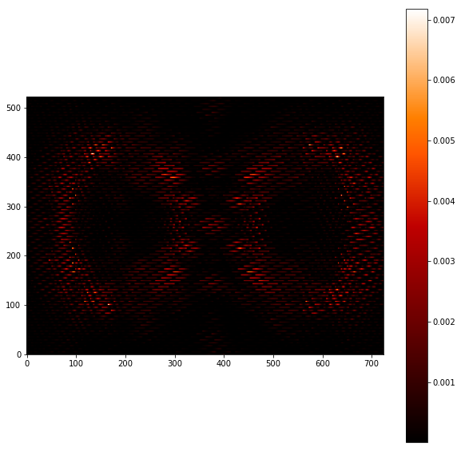

Detector modeling¶
In [1]:
import numpy as np
import glob
import matplotlib
import matplotlib.pyplot as plt
matplotlib.rcParams['image.origin'] = 'lower'
matplotlib.rcParams['image.interpolation'] = 'nearest'
import sys
codefolder = '../../../../crispy'
if codefolder not in sys.path: sys.path.append(codefolder)
from crispy.tools.initLogger import getLogger
log = getLogger('crispy')
from crispy.params import Params
codefolder = '../../../crispy'
par = Params(codefolder)
In [61]:
from crispy.tools.image import Image
img = Image('../../../crispy/OS5/os5_spc_100_targetstar_IFS.fits')
img.data = img.data[250:-250,150:-150]
plt.figure(figsize=(10,10))
plt.imshow(img.data, cmap='gist_heat')
plt.colorbar()
plt.show()
crispy - INFO - Read data from HDU 1 of ../../../crispy/OS5/os5_spc_100_targetstar_IFS.fits

In [64]:
from crispy.tools.detector import readDetector
par.EMGain=200
par.EMbias=100
par.threshold=5
par.dark=2e-4
par.CIC=1.2e-2
par.Nreads = 1000
par.RN=20
par.poisson=True
par.EMStats=True
par.PCmode=True
par.makeHeader()
frame=np.zeros(img.data.shape)
dark = np.zeros(img.data.shape)
for i in range(par.Nreads):
#newread = readDetector(par,Image(data=dark),inttime=333)
newread = readDetector(par,img,inttime=100)
frame += newread
print(np.std(frame))
#vals = readDetector(par,img,10)
Image(data=frame,header=par.hdr).write(par.exportDir+"/detectorTestsWorseNoise.fits")
# plt.figure(figsize=(10,10))
# plt.hist(frame.reshape(-1)*par.EMGain,bins=100)
# import pylab as pl
# pl.gca().set_yscale("log")
# plt.show()
7.40907005014
crispy - INFO - Writing data to ../../../crispy/SimResults/detectorTestsWorseNoise.fits
In [4]:
par.hdr
Out[4]:
SIMPLE = T / conforms to FITS standard
BITPIX = 8 / array data type
NAXIS = 0 / number of array dimensions
EXTEND = T
COMMENT
COMMENT ************************************************************
COMMENT ********************** General parameters ******************
COMMENT ************************************************************
COMMENT
NLENS = 108 / # lenslets across array
PITCH = 0.000174 / Lenslet pitch (meters)
INTERLAC= 2 / Interlacing
PHILENS = 26.56505117707799 / Rotation angle of the lenslets (deg)
PIXSIZE = 1.3E-05 / Pixel size (meters)
LENSAMP = 0.5 / Lenslet sampling (lam/D)
LSAMPWAV= 660.0 / Lenslet sampling wavelength (nm)
FWHM = 2 / FHWM of PSFLet at detector (pixels)
FWHMLAM = 660.0 / Wavelength at which FWHM is defined (nm)
NPIX = 1024 / Number of detector pixels
DISPDIST= F / Use PISCES distortion/dispersion?
COMMENT
COMMENT ************************************************************
COMMENT ********************** Detector readout ********************
COMMENT ************************************************************
COMMENT
POISSON = T / Poisson noise?
RN = 30 / Read noise (electrons/read)
CIC = 0 / Clock-induced charge
DARK = 0.0 / Dark current
TRAPS = F / Use traps? T/F
QE = 0.68 / Quantum efficiency of the detector
PHCTEFF = 1.0 / Photon counting efficiency
EMSTATS = T / EM statistics?
EMGAIN = 3000 / Gain of the EM stage
PCBIAS = 300 / In order for negative RN
PCMODE = T / Photon counting mode?
THRESH = 5.5 / Photon counting threshold
CTE = 0.893 / Charge transfer efficiency
TRANS = 0.34 / IFS Transmission factor
POL = 1.0 / Polarization losses
INTTIME = 1000 / Integration time per frame
In [76]:
from scipy.interpolate import interp1d
par.QE = "QE_CCD201.txt"
loadQE = np.loadtxt(par.codeRoot+"/"+par.QE)
QE = interp1d(loadQE[:,0].T,loadQE[:,1].T)
QE(840.)
Out[76]:
array(0.449204683)